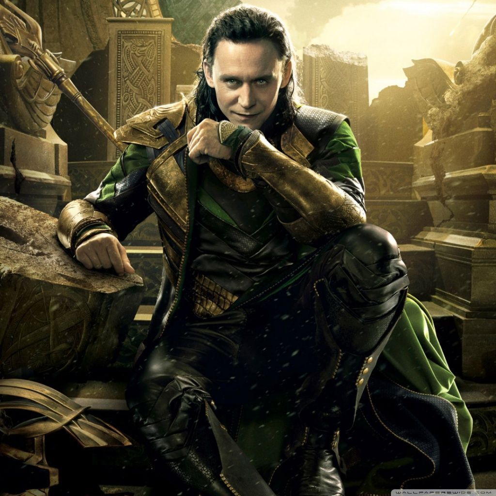

1 / 3

LOKI
2 / 3

LOKI
3 / 3
LOKI
Tom Hiddleston plays the character in MCU, Loki Laufeyson is the biological son of Laufey, the ruler of the Frost Giants in Jotunheim, who was abandoned and left to die shortly after his birth. Found by Odin, Loki was taken to Asgard and raised by him and Frigga as an Asgardian prince, along with Thor. Loki was given with command over the Chitauri army in order to conquer Earth, under the provision that Loki acquires the Tesseract for Thanos, but all of Loki's schemes were ultimately defeated by the Avengers. He appears in THOR(2011), THOR:THE DARK WORLD(2013),THOR:RAGNAROK(2017),THE AVENGERS(2012),AVENGERS:INFINITY WAR(2018).
Read More
GO TO HOME